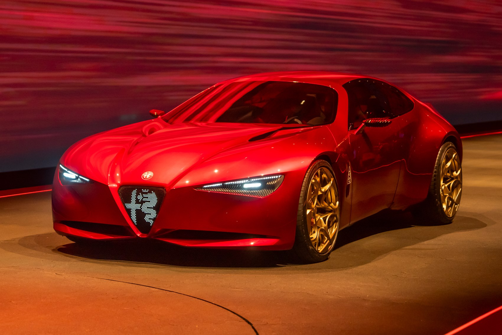

for DC Advanced UX Team.Vivi · Yohan · Libby · Lim Jisu · Katey · Anna
Back Issue

Cockpit
Cuorerosso: twin dials that slide into one
Alfa Romeo's Cuorerosso concept at Paris puts the Cannocchiale Vivente in front of the driver. In Immersivo mode the cluster is two physically separate dials; switch to Concentrato and they slide together into one screen that shows only essentials, echoing the single dial of the 1960s 33 Stradale. A floating centre console mixes rotary dials, drive toggles and a touch surface Alfa calls phygital. Steer-by-wire sits under a flat-topped three-spoke wheel. The cluster idea is meant for STLA SmartCockpit; the car itself is not promised for production.
알파 로메오의 파리 콘셉트 쿠오레로소는 운전석 앞에 칸노키알레 비벤테 계기판을 둔다. Immersivo에서는 물리적으로 갈라진 다이얼 두 개이고, Concentrato로 바꾸면 하나로 미끄러져 합쳐지며 필수 정보만 남긴다. 1960년대 33 스트라달레의 단일 다이얼을 떠올린다. 플로팅 센터 콘솔은 로터리·드라이브 토글·터치를 섞은 피지털이다. 스티어 바이 와이어에 플랫톱 3스포크 휠이 올라간다. 클러스터는 STLA SmartCockpit으로 이어질 수 있고, 차 자체는 양산 약속이 없다.
RCZ Vision: transparent Micro LEDs that can vanish
Peugeot's RCZ Vision at Paris pairs Hypersquare with transparent Micro LED panels. A clear display sits just above the rectangular steer-by-wire control for driving info; a vertical floating centre screen handles navigation and media and can switch off until it nearly vanishes into the dash. Peugeot calls it better over more: materials stay visible instead of black glass. Mobile air vents tuck away when unused. The same production Hypersquare will land on the next E-208. Design director Matthias Hossann says suppliers are already working the panels toward production.
푸조의 파리 RCZ Vision은 하이퍼스퀘어와 투명 Micro LED 패널을 짝짓는다. 직사각 스티어 바이 와이어 바로 위에 투명 주행 정보 디스플레이가 있고, 세로형 플로팅 센터 스크린은 내비·미디어를 맡다가 끄면 대시보드 속으로 거의 사라진다. 푸조는 더 많은 화면 대신 더 나은 화면, 검은 유리 대신 재료가 보이게 한다고 한다. 송풍구는 쓰지 않을 때 들어간다. 같은 양산형 하이퍼스퀘어가 다음 E-208에 간다. 디자인 디렉터 마티아스 호산은 공급사와 양산을 밀고 있다고 했다.
BYD launched the Da Han, a large electric sedan, in China on 13 October. The wraparound cabin uses white ash wood trim and a 7.1.4 Devialet system with 31 speakers. Displays are a 40-inch AR-HUD, a 12.3-inch cluster, a 17.3-inch 3K floating centre pad and a 12.3-inch passenger screen. Front zero-gravity seats and a folding rear screen with a small table sit behind Nappa leather and ten-point massage. It is the usual Chinese flagship stack, stretched unusually wide across the glass.
BYD가 10월 13일 중국에서 대형 전기 세단 다한을 출시했다. 랩어라운드 실내는 화이트 애시 우드 트림과 7.1.4채널 드비알레 31스피커를 쓴다. 화면은 40인치 AR-HUD, 12.3인치 클러스터, 17.3인치 3K 플로팅 센터 패드, 12.3인치 동승석 디스플레이다. 앞좌석은 무중력 시트이고 뒷좌석에는 접이식 스크린과 작은 테이블이 있으며, 나파 가죽에 10점 마사지가 들어간다. 익숙한 중국 플래그십 구성인데 유리가 유난히 넓다.
Apple announced HomeView on 13 October: a 7-inch Liquid Retina display on a domed aluminium speaker, on a stainless hinge, with a wall-mounted sibling. An A18 and a rebuilt Siri recognise up to six faces. Brightness runs from 500 nits to 0.3 nits, and the UI shows less across the room, more as you approach. Faces include Photos, Flow and Snoopy; Home Camera shows nine feeds. It ships 13 November at 299 dollars. Siri is an English beta, and the EU is left out.
애플이 10월 13일 HomeView를 발표했다. 7인치 리퀴드 레티나 화면이 돔형 알루미늄 스피커 위 스테인리스 힌지에 기울고, 벽걸이형도 있다. A18과 다시 만든 Siri가 얼굴 여섯 명을 알아본다. 밝기는 500니트에서 0.3니트까지이고, 멀리서는 정보가 줄며 다가가면 늘어난다. 페이스에 사진, Flow, 스누피가 있고 카메라는 영상 아홉 개를 띄운다. 11월 13일, 299달러. Siri는 영어 베타이고 EU에는 아직 없다.
Renault showed the E-Space Concept in Paris on 12 October, a 4,700 mm electric reading of the 1984 Espace. The glazed cabin holds six rotating seats in lacquered shells. Second-row seats spin 180 degrees into a train square, with trays and 12.3-inch headrest screens. A pillar-to-pillar OpenR Panorama and a centre screen both swivel on a base behind a compact steer-by-wire wheel. Fold the middle row and a table appears, with a fridge, controllers and Connect 4. Stéphane Maiore led the interior.
르노가 10월 12일 파리에서 E-스페이스 콘셉트를 공개했다. 길이 4700mm, 1984년 에스파스의 전기 해석이다. 유리 실내에 래커 셸 회전 시트 여섯 개가 있다. 2열은 180도 돌아 3열과 마주 보고, 트레이와 12.3인치 헤드레스트 스크린이 붙는다. 필러 투 필러 OpenR 파노라마와 센터 스크린은 스티어 바이 와이어 휠 뒤에서 회전한다. 2열을 접으면 냉장고와 커넥트 4가 있는 테이블이 된다. 인테리어는 스테판 마이오레다.
Motor1's 12 October look at the 2027 Hyundai Bayon shows a curved pair: a 12.3-inch infotainment screen and a matching cluster, depending on spec. The console stays full of buttons, between long vertical vents. Wireless CarPlay and Android Auto, a phone or watch as a key, and optional Bose sit with heated, ventilated front seats. N Line uses cloth and suede with red accents. Length grows 65 mm to 4,245 mm. A 136 hp hybrid comes later. The software generation is not named.
모터1이 10월 12일 2027 현대 베이온을 살폈다. 사양에 따라 12.3인치 인포테인먼트와 같은 크기 클러스터가 곡면으로 붙는다. 콘솔에는 버튼이 남고, 긴 세로 송풍구 사이에 있다. 무선 카플레이·안드로이드 오토, 폰·워치 키, 선택 Bose, 앞좌석 열선·통풍이 있다. N 라인은 레드 포인트 천과 스웨이드다. 길이는 65mm 늘어 4245mm다. 136마력 하이브리드는 나중이다.
It's Nice That spoke with David Rudnick and Arsenal's Johnnie Campbell on 12 October. Rocastle is a hand-drawn, three-weight blackletter, more than four years in the making, named for David Rocastle and kept for the club's culture voice. Northbank covers the match; Chapman covers community. Nearly every letter is unique to the system, including a G redrawn to iteration 2,000. Campbell will save it for the biggest moments. Rudnick's test is whether a fan would tattoo it.
잇츠 나이스 댓이 10월 12일 데이비드 러드닉과 아스널의 조니 캠벨을 만났다. 로캐슬은 손으로 그린 세 웨이트 블랙레터로 4년 넘게 만들었고, 선수 데이비드 로캐슬의 이름이다. 클럽의 문화 보이스용이다. 노스뱅크는 경기, 채프먼은 커뮤니티를 맡는다. 거의 모든 글자가 이 시스템만의 형태이고 G는 2000안까지 갔다. 캠벨은 가장 큰 순간에만 쓰겠다고 했다. 기준은 팬이 문신으로 새길 글자인가다.
On 13 October, 80 Level interviewed Guillotine Games about Mystery House 3D, a revival of the 1980 Apple II adventure. The original black-and-white lines are read as architecture, then filled with wood, wallpaper and whatever sits behind the camera. They started in Unity HDRP and moved to URP. Props are blocked in Blender; characters run through Character Creator 5 and iClone 8. The house stays smaller than a mansion so halls stay tight. A pitcher that was a few lines in 1980 is now a modelled object.
80 레벨이 10월 13일 길로틴 게임즈의 미스터리 하우스 3D를 다뤘다. 1980년 애플 II 어드벤처의 흑백 선을 건축 증거로 읽고 나무, 벽지, 카메라 뒤를 채운다. 유니티 HDRP에서 URP로 옮겼다. 소품은 블렌더에서 블록인하고 캐릭터는 Character Creator 5와 iClone 8을 거친다. 저택으로 키우지 않아 복도가 좁다. 선 몇 개였던 물주전자는 이제 모델이다.
STASH posted Jules Bourgès's first music video on 11 October: Belle, for Mistthom, made at WIZZ in Paris. The Gobelins alumnus storyboarded, posed and painted backgrounds with Edouard Guise, Juliette Laboria and Lélia Rolland. Colour scripts are by Leila Courtillon and Lélia Rolland. Animators, assistants and CNC-backed interns drew it by hand. He argues 2D can leave reality, so a fairy tale can question ownership. The film plays on the STASH page.
스태시가 10월 11일 쥘 부르제스의 첫 뮤직비디오 벨을 올렸다. 미스트톰을 위한 작품이고 파리 위즈에서 만들었다. 고블랭 출신인 그가 스토리보드와 포즈를 맡고, 에두아르 기즈, 줄리엣 라보리아, 렐리아 롤랑과 배경을 그렸다. 애니메이터와 CNC 지원 인턴이 손으로 그렸다. 그는 2D가 현실을 떠날 수 있어 동화로 소유를 묻는다고 했다. 영상은 스태시에서 재생된다.
Kawasaki's 2027 Versys 900 pairs a 948 cc inline-four with an Aero Edge body: layered panels and gaps so the fairing looks afloat. The 5-inch colour TFT has two layouts. Type 1 emphasises rising revs; Type 2 puts turn-by-turn navigation first. RIDEOLOGY draws the route on the dash and adds voice. Radar feeds collision warning, blind-spot detection and ACC Lite, which slows on engine braking only. US bikes arrive in March 2027 as the SE LT in Plasma Lime Green.
가와사키 2027 버시스 900은 948cc 직렬 4기통과 에어로 엣지 차체다. 겹친 패널과 틈으로 페어링이 떠 보인다. 5인치 컬러 TFT는 레이아웃이 둘이다. 타입 1은 회전 상승을, 타입 2는 턴바이턴 내비를 앞세운다. 리디올로지가 경로를 계기판에 올리고 음성을 더한다. 레이더는 충돌 경고, 사각, 엔진 브레이크만 쓰는 ACC 라이트를 먹인다. 7단 스크린은 거의 50:50 트렐리스 위에 있다. 미국형은 2027년 3월 SE LT, 플라즈마 라임 그린이다.
Electrek covered Lectric's XPress Lite on 13 October, a lighter XPress2 at 1,099 dollars. Battery out, it weighs 20.7 kg. A 500 W rear hub peaks at 864 W and just over 61 Nm, with an eight-speed Shimano Altus and an in-house torque sensor. The XPerience Switch chooses torque or cadence assist, plus a paddle thumb throttle. A 3.5-inch colour TFT pairs with a rear lamp that brakes and indicates. Four colours share one mid-step frame. The pack is 375 Wh, rated to 45 miles.
일렉트렉이 10월 13일 렉트릭 엑스프레스 라이트를 다뤘다. 엑스프레스2의 경량형으로 1099달러다. 배터리를 빼면 20.7kg이다. 500W 후륜 허브는 최대 864W, 토크 61Nm을 조금 넘고, 8단 시마노 알투스와 자체 토크 센서가 붙는다. 스위치로 토크와 케이던스 어시스트를 고르고 패들 스로틀이 있다. 3.5인치 컬러 TFT는 제동·방향지시 후미등과 짝이다. 네 색이 같은 미드스텝 프레임을 쓴다. 배터리는 375Wh, 표기 45마일이다.
80 Level's 13 October note on Waterfalls Dream describes Mogmek's Godot builder for stylised waterfalls. Terrain is a voxel volume you edit live, then drop rocks, trees, water or a rubber duck. Rigid bodies, cloth, sand and several water types interact both ways. The scene is procedural, which is why a modest GPU can hold it. Foam alone uses seven systems. The reference is the Altai waterfalls: rebuild the water other cozy builders leave out. Mac and Windows run it.
80 레벨이 10월 13일 모그멕의 고도 빌더 워터폴스 드림을 소개했다. 지형은 실시간 복셀이고 바위, 나무, 물, 고무 오리를 놓는다. 강체, 천, 모래, 여러 물이 양방향으로 만난다. 화면은 절차적이라 평범한 GPU로도 선다. 거품만 일곱 시스템이다. 알타이 폭포를 보고, 다른 빌더가 빼먹는 수효과를 다시 만든다. 맥과 윈도우에서 돌아간다.
Creative Boom profiled Aki Kanai and Taku Sasaki on 13 October. After 17 years at Kokuyo, the pair redesigned its identity themselves. The mark is a bold black wordmark over diagonal blue stripes, then black-on-blue and mint. The same system lands on a building sign, bags, envelopes, cards, caps and a hand-shaped mug. They call it rules that generate many designs from a few elements. Files pass back and forth until the pair, not either person, owns the result.
크리에이티브 붐이 10월 13일 아키 카나이와 타쿠 사사키를 소개했다. 고쿠요에서 17년을 일한 둘이 아이덴티티를 직접 다시 그렸다. 굵은 검은 워드마크가 파란 사선 위에 놓이고, 검정 위 파랑과 민트로 반복된다. 같은 체계가 건물 사인, 가방, 봉투, 명함, 모자, 손 모양 머그에 붙는다. 적은 요소와 규칙으로 많은 디자인을 만든다고 했다. 파일을 주고받아 결과가 두 사람의 것이 된다.
designboom's 13 October interview with Lucy McRae follows two decades of putting technology on the body. From 2006 to 2010 she ran a Philips lab on emotional-sensing dresses and electronic tattoos. Compression Cradle, at the 2019 Milan Triennale, later fed a crèche and birth bags for Blade Runner 2099. With Sharef Mansy she made Swallowable Parfum, a fictional pill that would have the body make its own scent. A clothing line is set for Los Angeles in 2027. Worn objects, she says, are architectures you cannot see.
디자인붐이 10월 13일 루시 맥레이를 인터뷰했다. 2006년부터 2010년까지 필립스에서 감정 감지 드레스와 전자 타투를 했다. 2019년 밀라노의 컴프레션 크레이들은 블레이드 러너 2099의 보육실과 출생 가방으로 이어졌다. 샤레프 만시와는 몸이 스스로 향을 내는 허구의 알약 스왈로어블 퍼퓸을 만들었다. 옷은 2027년 로스앤젤레스다. 그녀는 입는 물건도 건축이며 보이지 않을 뿐이라고 했다.
Creative Boom reported on 13 October that Brandon Thomas released ArtCraft: seven free, open-source apps recreating Photoshop, Illustrator, Premiere, Lightroom, After Effects, InDesign and Acrobat Pro. He built them with Claude Opus 5.5 after an early-termination fee on an Adobe plan. Screenshots sit close to the original layouts. He claims a working Photoshop equivalent can now be produced in one pass. The piece is an essay around that release, not a test of shortcuts or file formats.
Creative Boom于10月13日报道ArtCraft：七个免费开源应用，对应Photoshop到Acrobat Pro。Brandon Thomas用Claude Opus 5.5做成，起因是取消Adobe订阅的提前终止费。截图布局贴近原版。他说能用的等价物可以一次生成。文章没有实测快捷键或文件格式。
크리에이티브 붐이 10월 13일 브랜든 토머스의 아트크래프트를 전했다. 포토샵, 일러스트레이터, 프리미어, 라이트룸, 애프터 이펙트, 인디자인, 아크로뱃 프로를 재현한 무료 오픈소스 앱 일곱 개다. 어도비 해지 수수료 뒤에 클로드 오푸스 5.5로 만들었다. 스크린샷 레이아웃은 원본에 가깝다. 쓸 수 있는 포토샵 등가물을 한 번에 만들 수 있게 됐다고 한다. 글은 에세이지, 단축키나 파일 형식의 실측은 아니다.
On 13 October, 80 Level ran Rodeo FX's breakdown of House of the Dragon season 3. A crew of 133 delivered 394 shots and 46,327 frames, about 10,000 frames beyond season 2. King's Landing had to vanish into the plate, so street extensions stay invisible. Tumbleton was built entirely in CG, which cut the cleanup. The close used crowd work across about a hundred shots, plus dragon fire and destruction. Two rules: disappear, or author the place.
80 레벨이 10월 13일 로데오 FX의 하우스 오브 더 드래곤 시즌 3를 실었다. 133명이 394샷, 46327프레임을 냈고 시즌 2보다 프레임이 약 1만 많다. 킹스랜딩은 실사에 녹아야 해서 거리 확장이 보이지 않는다. 텀블턴은 전부 CG라 정리가 줄었다. 마지막은 약 백 샷의 군중과 드래곤 파이어다. 규칙은 둘이다. 사라지거나, 장소를 처음부터 만든다.